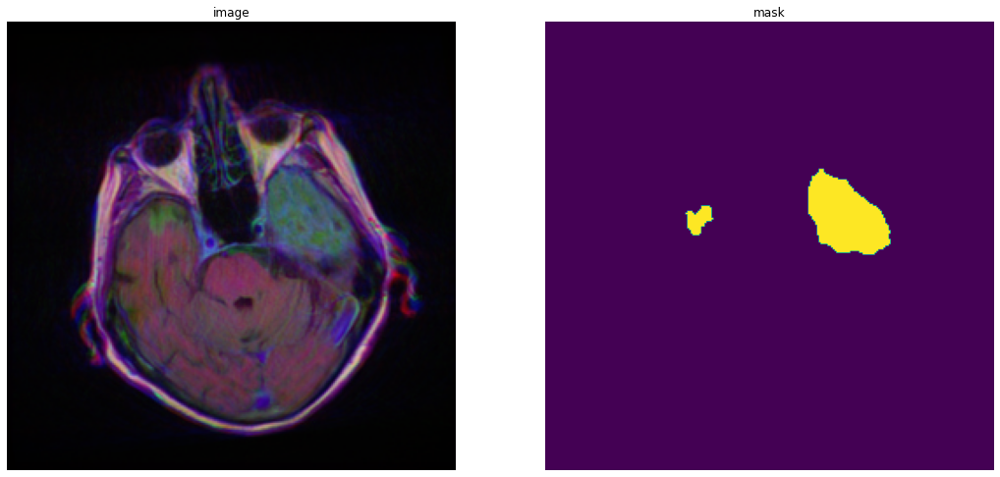
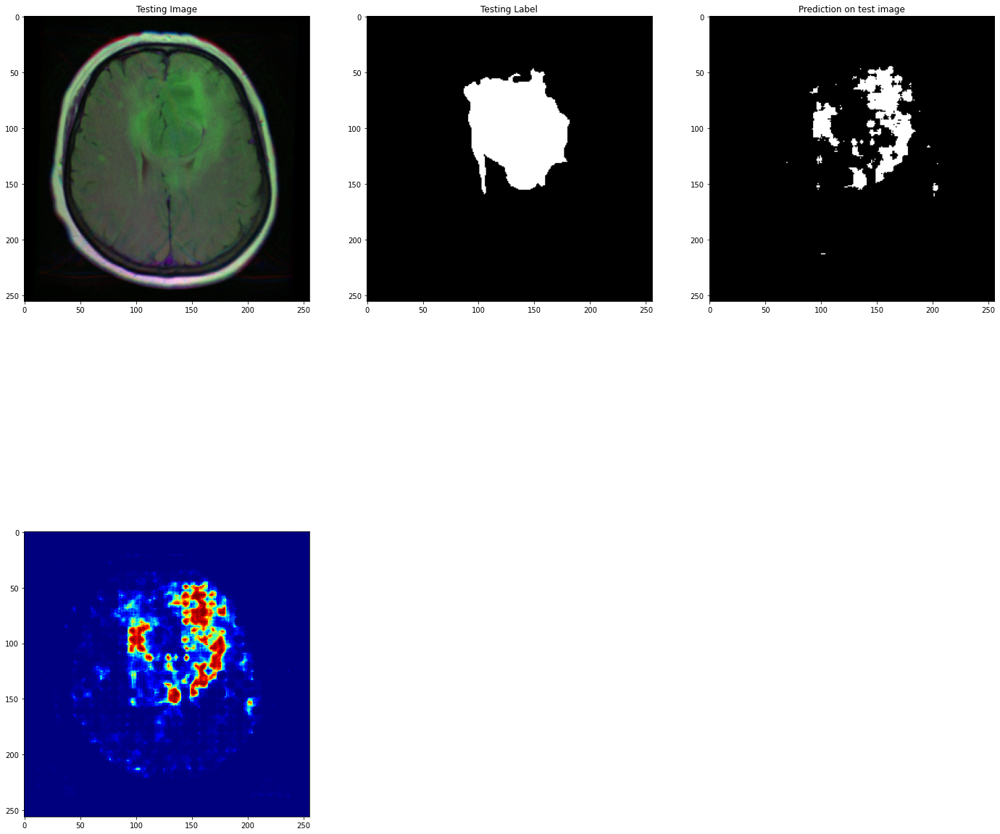
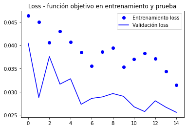

U-Net for brain tumor
segmentation
I implemented a U-Net model to segment tumors in human brain magnetic resonance imaging (MRI) images. I used the Kaggle MRI Brain Segmentation database consisting of 110 MRI volumes from an equal number of patients.
Within the aforementioned database, we came across the following data. The image on the left is a resonance from a patient with a tumor, which will serve as the input to our U-Net network. We want our output image to have the structure of the image on the right. It is a segmentation of the tumor in the image on the left."

After training the neural network, we obtained the following results. The first two images are from the database, while the last two are the output of the neural network.

These are the accuracy and lost function graphs of U-Net neural network throughout the training.
/imagen3_de__(2_1).png)
|
 |
The complete work is available in the following Jupyter notebook PDF .